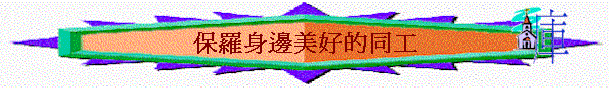

G.保羅身邊美好的同工
引言：西 4:7-14保羅在結語及代弟兄向歌羅西教會問安中題及不少他所認識的同工，你心目中的好「同工」是怎樣的？
我們從經文看看保羅身邊同工的特質，以致我們可以也成為別人的「好同工」
1.
1.4:7題及推基古，他是誰？(徒20:4)
2.
保羅怎形容他？何謂「忠心」？何謂「執事」？
3.
弗6:21、提後4:12、多3:12也提及推基古，他時常為保羅做甚麼事情？他所作的事有甚麼意義？
4.
西4:9又題及阿尼西母，他是誰？(門10)
5.
阿尼西母和推基古有甚麼共同的地方？有甚麼值得我們效法？
6.
在教會中，你有否發現一些肢體如阿尼西母及推基古一樣，是忠心及甘心的被差遣者？
7.
4:11題及「奉割禮的人中，只有這3個人」，這3個人是誰？
8.
通常甚麼人是奉割禮的？當時行割禮的人對於外邦人有什麼感覺？我們猜想為什麼只得這3位奉行割禮的人與保羅往未受割禮的外邦人傳福音/作建立外邦教會的工作？
9. 今日在教會中有否肢體像以上三位人那般，關心普世的需要？你又像他們麼？為什麼？
10.
馬可又是誰？徒15:37-39發生甚麼事情？你猜想在徒15:37-39的時間中，保羅欣賞認同此人的事奉表現嗎？但提後4:11保羅怎形容馬可？保羅願否與他同工？
11.
在你的事奉中，有否遇過一些肢體，是你/其他弟姊妹不欣賞或不重視或不認同的，但後來成為你的同工，對你又有益的？
12.
西4:12提及「以巴弗」，他有甚麼是保羅欣賞的？
13.
你認為自己像不像以巴弗？那一方面你最想效法？
14.
西4:14題及路加和底馬，若我們參考提後4:10-11，我們看到他們的有甚麼分別？
15.
在你走天路中，有否遇到一些肢體對你不離不棄，令你很感動的。
16.
推基古、阿尼西母、馬可、以巴弗、路加、底馬
-------- 你最深刻是誰？為甚麼？
祈禱